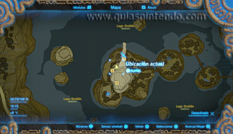
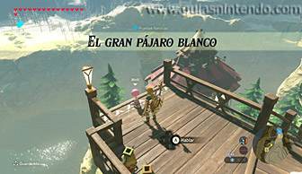
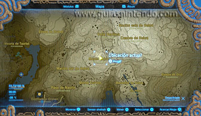
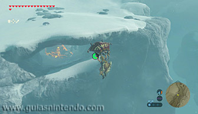
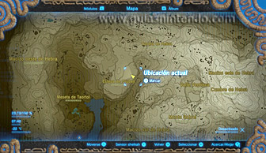
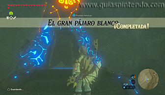
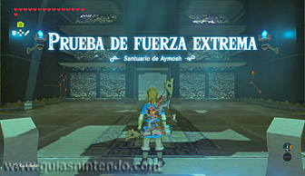
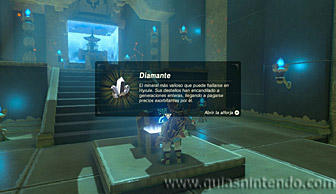

Se encuentra en la región de la torre de Hebra, pero como está oculto, tendrás que completar la Prueba heroica "El gran pájaro blanco" para sacarlo a la luz. Para activar dicha prueba debes hablar con una niña llamada Molli que hay al noroeste del poblado orni, alrededor del mediodía (aunque no es necesario hacerlo para que aparezca el santuario).

Molli te hablará de un árbol muy grande que hay en la cordillera de Hebra, en el punto más alto del monte Sabrel, lugar desde el que tendrás que planear hacia el noroeste con la paravela hasta alcanzar una zona denominada estepa de Orubell. De esa manera, podrás encontrar el santuario bajo una cornisa que hay al este de dicha zona.

Al encontrar el santuario completarás la prueba heroica y podrás entrar en él.

Dentro del santuario debes derrotar a un miniguardián 4.0: uno de los dos miniguardianes más poderosos de los que vas a encontrar en los santuarios de esta región.

Después de derrotarlo dirígete al altar y en el camino podrás abrir un cofre que contiene un diamante. Cuando llegues al altar podrás examinarlo para obtener un símbolo de valía.
